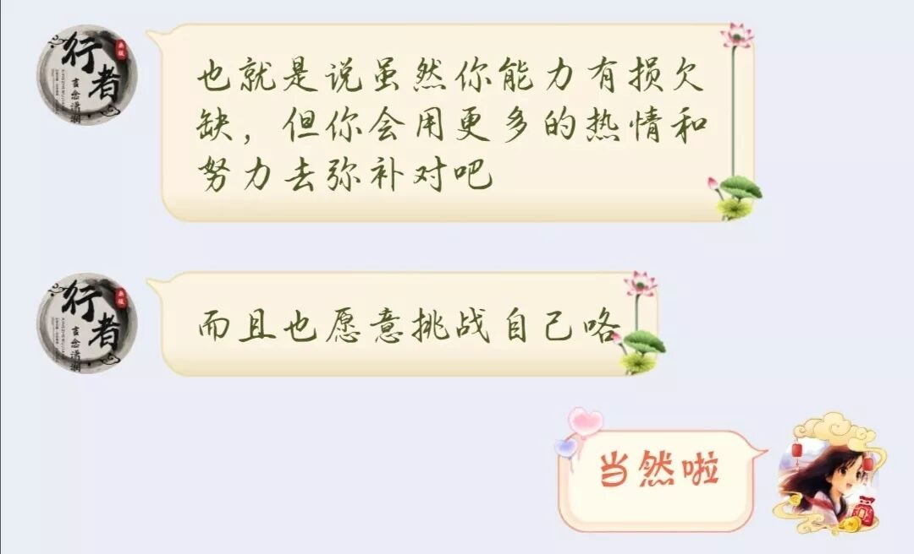
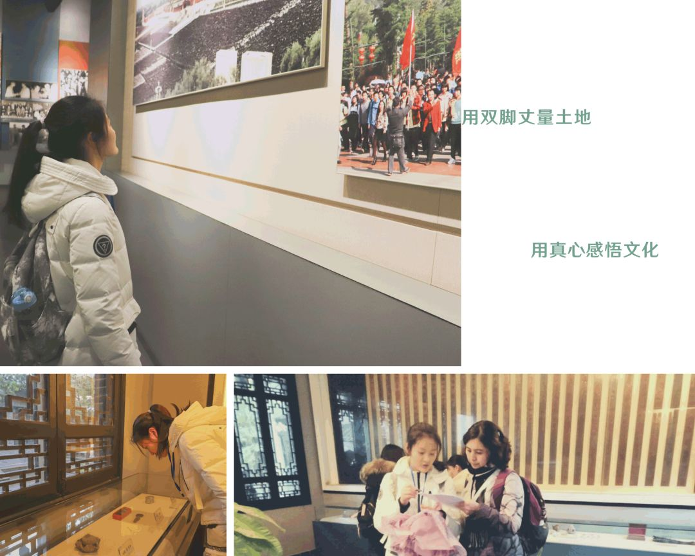
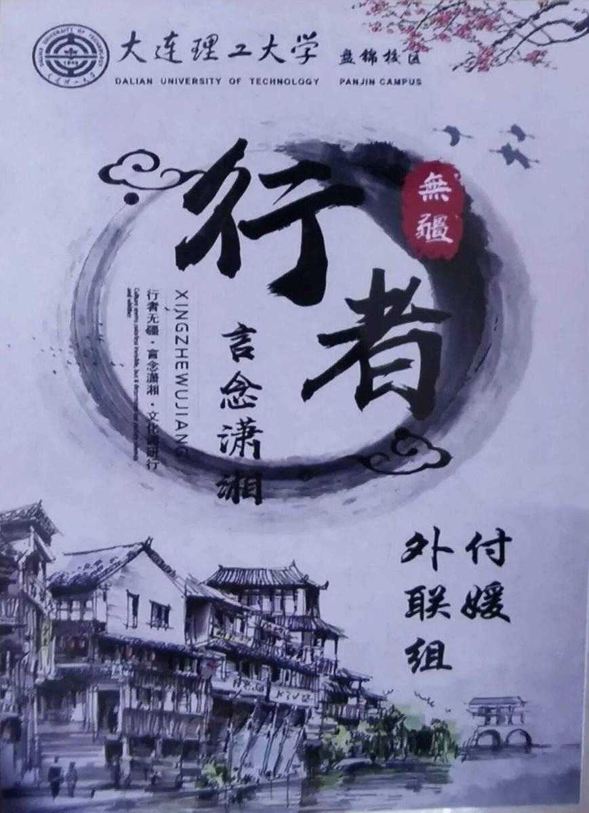
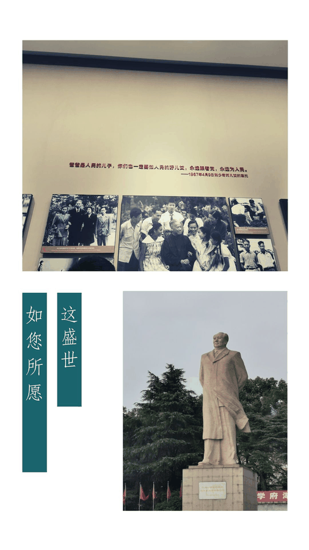
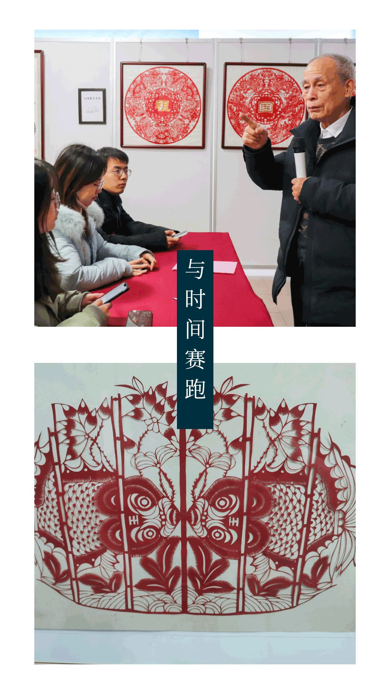
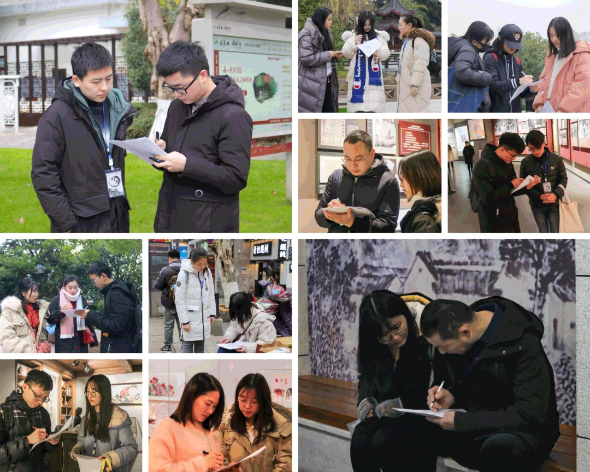
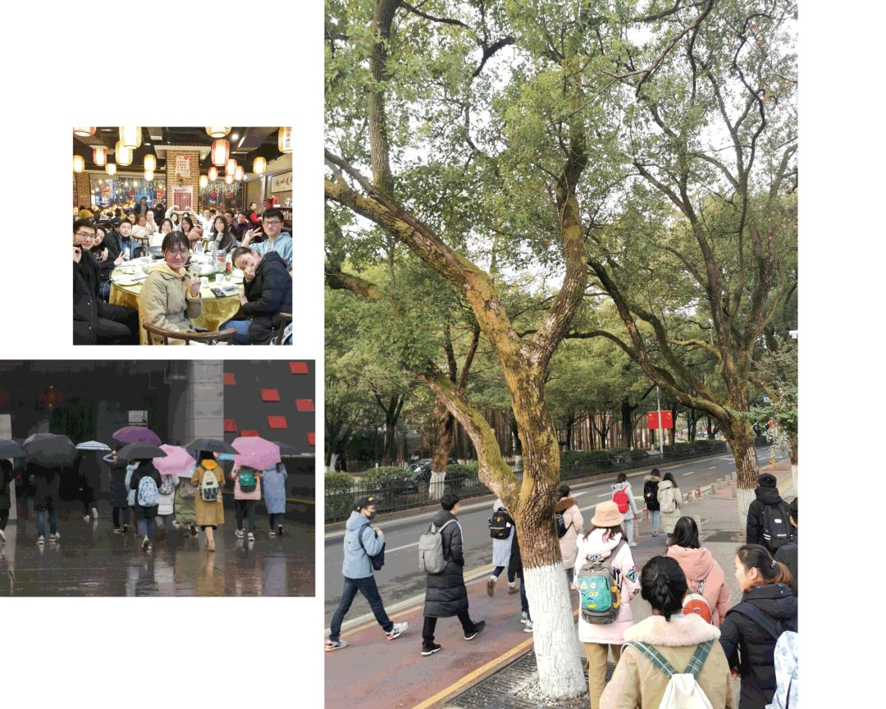
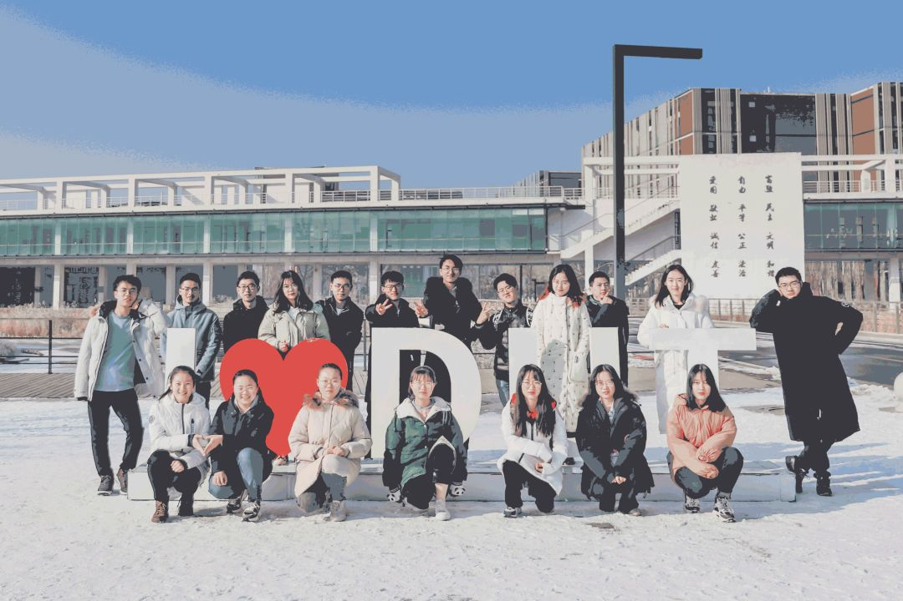

【赋墨沉湘·十三】星火滚烫，你是人间理想。

星火滚烫 你是人间理想
千山万水，你是心之所向
星火滚烫，你是人间理想
距离实践结束已有一段时日了，如今回忆起却如梦一般，似乎又回到了那个午后:
一杯清茗
一台电脑
一张报名表
和一个坚定的我
后来怀着一颗忐忑不安的心参加了面试，在大佬云集之中深感到自己能力的不足，本以为我会与本期的实践无缘，但心里仍留存一点小小的希望，直到我等来了那封邮件:
“恭喜你！成为2020年寒假”行者无疆“团队中的一员！……在即将到来的文化苦旅中，我们将共同书写精彩的故事，而你，也会不忘初心的，对吗？”
现在，我只想大声的回答：“是的！”加入这个团队是我在2019年结束前最大的幸运。



1
行者，行走的人，亦是实践者，而实践是检验真理的唯一标准，我想用自己的双脚去丈量祖国的土地，用真心去感悟当地的文化。
当我来到一个陌生的地方，可以暂时抛却自己的身份，自己的过去，成为一个文化调研者，一个虔诚的苦行僧，亲身经历学习并把文化加以传承与弘扬。命运总是兜兜转转百转千回，又有多少人来来回回错过又擦肩，可说到底人也只能活这一次，青春一去也再不复回，我只愿在我有限的生命里多做一些有价值的事情，这便是，我加入行者无疆的初心了。


其实，对于一个毫无任何外联经验而又不善言辞的我而言，担任外联组成员的确是个挑战。不可否认在我内心深处是有一些胆怯和紧张的，特别是在第一次联系调研对象时，我一遍遍地查各种资料，想好礼貌用语后有些犹豫的打通了电话，传来一阵忙音，无人接听。
在这里感谢我的“工具人”组长一直在鼓励我，给我一些建议，在他身上我学习到了很多。终于，我可以独立联系调研对象并定好相应的行程，也算是兑现了我给行者酱的承诺。

星火滚烫 你是人间理想
千山万水 你是心之所向


这次的行程只有短短的五天，但行者的脚步从未停歇。我们探访了“世界上最古老的学府之一”岳麓书院、“中国最早的名人故居”贾谊故居。在太平老街、靖港古镇里体味生活百态；在博物馆里探寻文物的前世今生；在伟人刘少奇同志和毛泽东同志的纪念馆与故居里学习他们的俭朴和对党对人民的奉献精神；在湘绣的一针一线，剪纸的边折边剪中感受民间手工艺人的匠心独具与执着坚守……

也许我们所做的这些改变不了什么，我们付出的努力与辛苦也不会被很多人理解，但是我们只想让那些依然在传承那些非物质文化遗产并且执着坚守的手工艺人们知道，真的有这样的一些人，他们在认认真真的去做文化调研，而且他们也在关注这些濒临失传的文化遗产，关注那些令人敬佩的“与时间赛跑”的文化传承者。
敬一丹说：“人的一生，要走多少路，才能确定前行的方向；在路上要遇见多少人，才能知道与谁同行。”
我很庆幸我可以遇见这些可爱而又暖心的小伙伴们，我想我不会忘记我们一起坐的20几个小时的火车；
一起品尝的长沙特色小吃；
一起在阴雨绵绵中发的问卷；
一起在黑夜里的奔走；
一起在开会时候的分享心得与感悟……
不算长的行程却有着满满的回忆，也许我已经找到了我想要的答案。
思者无域，行者无疆，我们本期的实践虽然结束了，但一个故事的终结意味着一个新的故事的开启，凡是过往，皆为序章，行者们，一直在路上。

行者无疆
我们一直在路上

来源 | 行者无疆实践团
文字 | 付媛
排版 | 康艳虎
审核 | 段智然 康艳虎 黄玲
行者无疆实践团
QQ：2758025831

随行者一起认识世界
长按二维码